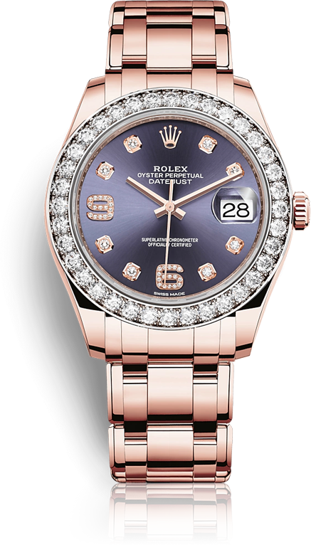

Oyster, 39mm, Eyerose Gold, Diamond
PEARMASTER39
롤렉스가 자체 주조한 18캐럿 옐로우,화이트 또는 에버로즈 골드로만 제작되며 다이아몬드, 사파이어,루비 등 아름다운 보석 세팅과 화려한 다이이얼이 특징인 롤렉스 펄마스터는 완만한 곡선의 펄 마스터 디자인을 갖춘 모델입니다.
롤렉스가 자체 주조한 18캐럿 옐로우,화이트 또는 에버로즈 골드로만 제작되며 다이아몬드, 사파이어,루비 등 아름다운 보석 세팅과 화려한 다이이얼이 특징인 롤렉스 펄마스터는 완만한 곡선의 펄 마스터 디자인을 갖춘 모델입니다.
롤렉스가 자체 주조한 18캐럿 옐로우,화이트 또는 에버로즈 골드로만 제작되며 다이아몬드, 사파이어,루비 등 아름다운 보석 세팅과 화려한 다이이얼이 특징인 롤렉스 펄마스터는 완만한 곡선의 펄 마스터 디자인을 갖춘 모델입니다.
Pearlmaster 39를 우아하게 장식한 다이아몬드들은 엄격한 기준에 따라 선정되며, 보석의 가장 강렬한 광채를 최대한 끌어낼 수 있는 정교한 전통 기법으로 세팅합니다. 롤렉스가 보유한 자체 보석학 연구소에서는 숙련된 전문가들이 보석의 품질을 관리합니다. 선택된 보석들은 롤게스 의 인하우스 세팅 장인 들의 손에서 보석의 자연스러운 광채를 극대화 할 수 있도록 세팅합니다. 보석 자체의 탁월한 품질 외에도 롤렉스 보석 세팅의 명성을 높이는 몇가지 기본 조건이 더 있습니다. 보석의 높이와 방향, 위치가 정확히 정렬 되어야하고, 보석이 견고하여야 하며, 세팅이 아름답고 규칙적이어야 하고, 비즈의 미감이 뛰어나야 합니다.
부드러운 둥근 라인이 특징인 18캐럿 골드 솔리드 링크로 구성된 펄마스터 브래슬릿은
Oyster Perpetual Pearlmaster 39 만의 개성을 나타냄과 동시에 착용시 편안함을
극대화 해줍니다. 또한 우아하면서도 기능적인 크라운 클라스프가 겉으로 보이지 않게
장착되어 있으며, 일부 모델의 브래슬릿 중간 링크에는 18캐럿 화이트골드 위에 다이아몬드가
아름답게 세팅되어 있습니다. 배젤과 다이얼로 은은하게 이어지는 이 매혹적인 보석세팅은
정통워치메이킹 걸작품의 아름다움을 완성해 줍니다.
부드러운 둥근 라인이 특징인 18캐럿 골드 솔리드 링크로 구성된 펄마스터 브래슬릿은
Oyster Perpetual Pearlmaster 39 만의 개성을 나타냄과 동시에 착용시 편안함을
극대화 해줍니다. 또한 우아하면서도 기능적인 크라운 클라스프가 겉으로 보이지 않게
장착되어 있으며, 일부 모델의 브래슬릿 중간 링크에는 18캐럿 화이트골드 위에 다이아몬드가
아름답게 세팅되어 있습니다. 배젤과 다이얼로 은은하게 이어지는 이 매혹적인 보석세팅은
정통워치메이킹 걸작품의 아름다움을 완성해 줍니다.
다이얼 제작은 진정한 '메티에다르(metier d'art)'입니다. 롤렉스는 다이얼 제작의 전 과정을 자체 메뉴팩처에서 담당하는 극히 드문 워치메이커 중 하나입니다. 롤렉스는 진주, 골드, 메테오라이트, 다이아몬드 등 최고급 소재를 사용하며 다이얼에 탁월한 아름다움과 독특한 개성을 부여합니다.
롤렉스 시계는 출시 전, 20개 이상의 다양한 낙하 시험을 통과해야만 합니다. 가장 엄격한 승인 시험은 벨리에로써 강력한 숫양(ram)의 이름에서 유래되었습니다. 이러한 자체적인 충격 시험 장비는자동차 충돌 시험의 수백 배에 해당하는 5,000G의 충격을 시계에 가합니다. 이러한 충격에도 롤렉스 시계는 롤렉스에 걸맞는 최고 수준의 정확성과 외관을 유지하며 손상 없이 정상적으로 작동해야 합니다.
모든 Oyster Perpetual 모델은 무브먼트를 물, 먼지 및 충격으로 부터 최적의 상태로 보호하는 오이스터 케이스를 갖추고 있습니다. 롤렉스는 출고하기 전, 물 속에 담근후 검증된 깊이에서 받는 압력보다 10% 더 큰 압력을 가하며, 그중 다이빙 워치의 경우에는 25% 더 큰 압력을 가하는 방수 시험을 합니다. 이시험은100미터 이상의 수압에 견딜 수 있는 것이 롤렉스 오이스터의 전부가 아님을 의미합니다.
플랑레와트 생산 단지에서는 안전 유리 스크린 뒤로 흰색 로봇의 부산한 행동이 24시간 지속됩니다. 마치 베이스에 단단히 고정되어 있는 관절로 연결된 팡이 시계가 일정한 간격을 두고 임의로 반복해서 움직이는 것처럼 보입니다. 로봇은 시계가 어떻게 작동할 것인지에 관한 피드백을 디자이너에게 전달하기 위해1주일안에 다년간 사용한 결과를 만들어 모의시험할수 있도록 설계되었습니다.
새로운 Pearlmaster 39는 최상의 성능을 구현하기 위하여 롤렉스에서 직접 개발하고 제작한 무브먼트인 칼리버 3235를 탑제하고 있습니다. 스위스 크로노미터 인증기과(COSC)에서 스위스 크로노미터 인증을 획득한 무브먼트의 케이스 조립을 완료한 뒤, 다시 한번 2차 테스트를 실시합니다. 일상적인 사용에서 공인 크로노미터 보다 2배 정도 엄격하게 정밀한 성능을 보장하는 롤렉스의 기준을 만족시키는지 확인하기위해서입니다. 조립이 완료된 시계에 대한 최종 품질 관리는 롤렉스에서 특별히 개발한 하이테크 장비를 이용하여 롤렉스 만의 방법으로 진행됩니다.
무브먼트
분해 및 세척
정확도
무브먼트 재조립
정확도
테스트
광택작업 및
케이스 재조립
방수테스트 및
최종품질 검사
마무리단계
오버홀을 받은 시계의 서비스 보증기간은 2년 입니다. 하지만 취급 부주의 로 인해 시꼐가 손상되었을때에는 보증 서비스를 받으실 수 없습니다. 또한 비공식 서비스 기관을 통하여 작업이 이루어 지거나, 정품이 아닌 부품이나 악세서리로 변, 개조된 경우에도 롤렉스 의 보증 서비스를 받으실 수 없습니다.